前言
对于多数人来说，数学枯燥无味，却又不得不学。从小到大，总有人在耳边不断强调其重要性。回忆童年，除了对父母的第一声呼唤以外，我们被教授的第一个概念就是有与无， 然后是对自然数的认知。上小学后，有数学老师教我们加减乘除运算。背诵九九乘法口诀相信是每个人童年回忆中不可或缺的元素。读初中后，包括有理数、无理数、一元二次方程、 平面几何在内的数学知识步入我们的学习生活。到了高中，三角函数、复数、不等式、数列、解析几何不知让多少学生为之抓狂。更有甚者不少学生因数学成绩不好而影响高考择校。 步入大学，包括高等数学、线性代数、概率论与数理统计在内，数学门类更多、知识点更宽更深，为大学生挂科率做出了突出“贡献”。直到毕业前，甚至于参加工作以后，很多人仍然 迷茫“数学有用”是不是亲爱的老师们编织的“谎言”。
本书作者还是要继续强调数学的重要性。这是因为，数学是人类智慧的结晶，是人类智慧皇冠上璀璨的明珠，是人类科技进步的根基。 数学基础理论的稳步发展或者某个数学难题的突破性进展往往会推动多个相关学科的飞跃式发展，人工智能也不例外。起源于20世纪50年代的人工智能技术，经历了两次高潮、两次低谷。 第一次高潮以智力游戏为代表的逻辑推理智能为主。第二次高潮以机器翻译为代表的知识库智能为主。早在第一次高潮期时，就有“二十年内，机器将能完成人能做到的一切”的激进论断。 但是，计算机计算性能的不足、人工智能算法的普适性不强、数据量不足是导致人工智能在前两次高潮后均遭遇低谷的重点原因。随着7nm晶体管的商业化、特别是通用可编程图形硬件的发展， 计算机的计算能力得到飞跃式提升。另一方面，网络化、数字化的生活为数据的产生提供了温床。由此产生的数据包含大量有用但需要挖掘的信息。基于此，人工智能自21世纪第一个10年以来， 正处于依模式识别为代表的基于经验数据的第三次高潮期。2019年我国第一批35所高校获批“人工智能”本科专业，并开始招生。火热的高潮吸引着诸多科研工作者、程序员、学生的眼球，使他们心生向往。 更有观点认为人工智能超过人类智能的时间点，又称奇点，为2045年。但接触过相关知识的初学者往往因其涉及较多数学门类、知识过于繁杂，望而却步。曾经的踌躇满志、信心满怀， 被数学的现实打击的支离破碎。多数人半途而废，倒在探索的路上。坚持下来的人只能独立在多个数学门类中穿梭，结合人工智能算法涉及的知识点，重拾那些曾经让自己“魂牵梦萦”的数学原理。 数学门类的多样性、知识点的发散性，大大阻碍了学习效果。书籍是知识传播的最佳途径之一。基于此，本书着眼于人工智能核心算法涉及到的数学知识，立足于为读者全面系统地进行梳理， 提供深入浅出的讲解，希望起到抛砖引玉的作用，让数学的学习变得有针对性，使读者觉得数学的学习是趣味性的，而不是枯燥乏味的。
时间仓促且作者自识水平有限，本书内容难免存在错谬与不足之处，若蒙读者不吝告知，胜是感激。 相关内容请发电子邮件到fengchaolu@cse.neu.edu.cn，以便再版时修正或补充。
感谢我的母亲帮忙照顾我可爱的女儿，为我解决了生活的后顾之忧！感谢岳母的唠叨，给了我写作之外的生活的真实！ 计划编写本书时值我女儿百天之日。编写过程中，感谢我的妻子与女儿近500个日日夜夜的陪伴。多少个夜晚想要放弃编写，她们安然熟睡的笑脸，给了我提起精神， 继续写作的动力。谨以此书献给我的妻子和女儿。
冯朝路
2020年2月8日
课程目录：
序 3
前 言 5
内容简介 7
第1章 特征向量与矩阵分析 19
1.1 标量 19
1.2 特征向量与特征空间 19
1.2.1 特征空间的正交性 21
1.2.2 特征向量的大小与方向 21
1.3 向量转置 22
1.4 向量加法 22
1.5 向量乘法 23
1.5.1 向量数乘 24
1.5.2 向量内积 24
1.5.3 向量外积 26
1.5.4 分量乘法 27
1.6 向量的线性相关性 28
1.7 矩阵分析与人工智能 28
1.8 矩阵转置 31
1.9 矩阵加法 31
1.10 矩阵乘法 33
1.10.1 矩阵数乘 33
1.10.2 矩阵内积 34
1.10.3 内积的外积展开 35
1.10.4 元素乘法 36
1.11 矩阵的特征值与特征向量 36
1.12 矩阵的轶 38
1.12.1 初等变换 39
1.12.2 初等矩阵 40
1.13 矩阵的逆 40
1.14 矩阵的分块操作 43
1.15 矩阵的迹 45
1.16 矩阵分解 48
1.16.1 LU分解 48
1.16.2 特征分解 50
1.16.3 奇异值分解 52
1.17 二次型与正定矩阵 53
1.18 张量 55
1.19 本章小结 55
1.20 习题 56
参考文献 57
第2章 相似性度量 59
2.1 相似性度量的重要性 59
2.2 相似性度量的多样性 60
2.3 闵氏距离 61
2.3.1 曼哈顿距离 63
2.3.2 欧式距离 63
2.3.3 切比雪夫距离 64
2.3.4 曼-切转换 64
2.4 马氏距离 65
2.4.1 维度相关问题 65
2.4.2 独立化处理 66
2.4.3 与欧式距离的关系 67
2.5 余弦距离 68
2.5.1 夹角余弦 68
2.5.2 距离度量 69
2.6 汉明距离 69
2.6.1 严格定义 70
2.6.2 松驰定义 70
2.7 杰卡德距离 70
2.7.1 严格定义 71
2.7.2 松驰定义 71
2.8 皮尔森距离 72
2.8.1 相关系数 72
2.8.2 距离度量 73
2.8.3 局限性 73
2.9 斯皮尔曼距离 74
2.9.1 相关系数 74
2.9.2 距离度量 76
2.10 肯德尔距离 76
2.10.1 相关系数 76
2.10.2 距离度量 78
2.11 本章小结 78
2.12 习题 79
参考文献 80
第3章 函数与泛函分析 83
3.1 集合 83
3.1.1 定义与表示 83
3.1.2 元素特性 84
3.1.3 集合运算 85
3.1.4 凸集分离定理 86
3.2 区间 88
3.2.1 定义与表示 89
3.2.2 元素特性 90
3.2.3 区间算术 90
3.3 函数映射 91
3.3.1 自变量与因变量 92
3.3.2 多元函数 93
3.3.3 复合函数 93
3.3.4 连续性、单调性、奇偶性 95
3.3.5 函数凸性与极值 96
3.3.6 激活函数 98
3.4 导数 100
3.4.1 函数可导与泰勒展开 100
3.4.2 求导法则 103
3.4.3 偏导数与雅可比矩阵 105
3.4.4 方向导数与梯度 107
3.4.5 Hessian矩阵与函数凸性 109
3.4.6 凸函数成立条件 110
3.4.7 散度 111
3.5 微积分 112
3.5.1 微分 112
3.5.2 密切圆与曲率 113
3.5.3 不定积分 114
3.5.4 定积分 115
3.6 泛函数分析 116
3.6.1 基函数与函数内积 117
3.6.2 特征值与特征函数 117
3.6.3 线性空间与线性映射 118
3.6.4 对偶空间与对偶基 119
3.6.5 希尔伯特空间 119
3.7 本章小结 121
3.8 习题 122
参考文献 123
第4章 条件概率与贝叶斯 125
4.1 事件与概率 125
4.1.1 随机试验 125
4.1.2 样本空间 125
4.1.3 随机事件 126
4.1.4 概率 126
4.1.5 条件概率 127
4.1.6 事件独立性 127
4.1.7 全概率 128
4.2 随机变量及其概率分布 129
4.2.1 随机变量 129
4.2.2 概率分布 129
4.2.3 独立同分布 130
4.3 样本统计量 131
4.3.1 均值 131
4.3.2 样本方差 132
4.3.3 期望 132
4.3.4 概率方差 133
4.3.5 协方差 134
4.3.6 协方差矩阵 134
4.4 常见的概率分布 135
4.4.1 二项分布 135
4.4.2 泊松分布 136
4.4.3 指数分布与伽玛分布 136
4.4.4 贝塔分布 137
4.4.5 高斯分布及其变形 138
4.4.6 其它分布 140
4.5 贝叶斯决策 141
4.5.1 离散型贝叶斯公式 141
4.5.2 连续型贝叶斯公式 142
4.5.3 最小错误率贝叶斯决策 143
4.5.4 最小风险贝叶斯决策 145
4.5.5 朴素贝叶斯分类 146
4.6 参数估计 147
4.6.1 估计量与估计值 148
4.6.2 点估计与区间估计 148
4.6.3 置信区间与水平 149
4.6.4 估计量的评价 149
4.6.5 矩估计 151
4.6.6 最小二乘估计 151
4.6.7 最大似然估计 152
4.6.8 最大后验概率估计 154
4.6.9 贝叶斯估计与共轭分布 154
4.7 假设检验 156
4.7.1 原假设与备择假设 156
4.7.2 弃真与取伪 157
4.7.3 显著性水平与p-value 157
4.7.4 双侧检验与单侧检验 158
4.7.5 代表性检验统计量与方法 158
4.8 本章小结 159
4.9 习题 160
参考文献 161
第5章 信息论与熵 163
5.1 人工智能与信息论 163
5.2 特征编码 164
5.2.1 直接编码 164
5.2.2 One-hot编码 165
5.2.3 Dummy编码 165
5.3 压缩编码 166
5.3.1 聚类 166
5.3.2 特征降维 166
5.3.3 特征选择 168
5.3.4 稀疏编码 169
5.3.5 压缩感知 170
5.4 决策编码 170
5.4.1 假设空间 170
5.4.2 版本空间 171
5.4.3 决策平面 171
5.4.4 纠错输出码 171
5.5 决策解码 172
5.5.1 聚类 172
5.5.2 线性分类 173
5.5.3 纠错输出码 173
5.5.4 特征降维 173
5.6 自编码 174
5.6.1 恒等变换 174
5.6.2 欠完备自编码 174
5.6.3 稀疏自编码 175
5.6.4 收缩自编码器 175
5.7 不确定性与熵 175
5.7.1 定义与性质 175
5.7.2 联合熵 177
5.7.3 条件熵 178
5.7.4 交叉熵与损失函数 179
5.7.5 相对熵与KL散度 180
5.8 互信息 181
5.8.1 定义与性质 181
5.8.2 点互信息 182
5.8.3 与熵的关系 182
5.9 本章小结 184
5.10 习题 184
参考文献 186
第6章 线性分析与卷积 187
6.1 线性分析 187
6.1.1 线性运算 187
6.1.2 线性空间 187
6.1.3 线性空间基 188
6.1.4 线性映射与变换 189
6.1.5 线性映射的矩阵表达 189
6.1.6 坐标变换 190
6.2 线性判别 191
6.2.1 判别函数 191
6.2.2 判别分析 192
6.2.3 非线性问题 193
6.3 卷积 194
6.3.1 定义 195
6.3.2 两个例子 196
6.3.3 性质 197
6.3.4 边界填充 198
6.3.5 步长 199
6.3.6 与线性变换的关系 200
6.3.7 几种特殊应用 201
6.4 池化 201
6.4.1 定义 201
6.4.2 作用与意义 202
6.4.3 与卷积的关系 202
6.5 反卷积 203
6.5.1 作用与意义 203
6.5.2 与线性变换的关系 203
6.5.3 卷积表示 204
6.6 本章小结 205
6.7 习题 205
参考文献 207
第7章 正则化与范数 209
7.1 过拟合问题与正则化 209
7.1.1 泛化能力 210
7.1.2 过拟合与欠拟合 210
7.1.3 假设空间与归纳偏好 211
7.1.4 无免费午餐定理 212
7.2 硬正则化 213
7.2.1 数据归一化、标准化 214
7.2.2 提前终止训练 215
7.2.3 权值共享 216
7.2.4 池化 217
7.2.5 随机失效 217
7.2.6 集成学习 218
7.2.7 支持向量机 219
7.3 软正则化 220
7.3.1 损失函数 220
7.3.2 期望风险 222
7.3.3 经验风险 223
7.3.4 置信风险 224
7.3.5 VC维与置信风险 225
7.3.6 目标函数与支持向量机 226
7.4 范数正则化 226
7.4.1 定义与性质 226
7.4.2 向量范数 227
7.4.3 矩阵范数 228
7.4.4 关联关系 230
7.5 本章小结 231
7.6 习题 231
参考文献 232
第8章 最优化理论与方法 233
8.1 最优化的意义与重要性 233
8.2 直接法 234
8.2.1 极值、最值与驻点 234
8.2.2 一元函数 235
8.2.3 二元函数 236
8.2.4 多元函数 236
8.3 无约束迭代法 237
8.3.1 一般迭代法 237
8.3.2 下降迭代法 237
8.4 梯度法 237
8.4.1 一阶泰勒展开 237
8.4.2 柯西—施瓦茨不等式 238
8.4.3 学习率与梯度降 238
8.4.4 最速下降法 239
8.4.5 批量下降法与随机下降法 239
8.5 牛顿法 240
8.5.1 二阶泰勒展开与Hessian矩阵 240
8.5.2 一维线性搜索 241
8.6 拟牛顿法 241
8.6.1 Hessian逆的秩1修正 243
8.6.2 Hessian逆的秩2修正 244
8.6.3 秩1修正的逆 246
8.6.4 Hessian矩阵的近似及其变形 247
8.7 共轭梯度法 249
8.7.1 共轭向量与共轭方向 249
8.7.2 共轭方向法 250
8.7.3 共轭方向与梯度的正交关系 252
8.7.4 基于梯度的共轭方向生成 255
8.8 次梯度法 258
8.8.1 次梯度定义 258
8.8.2 次梯度取值 258
8.8.3 次梯度优化条件 259
8.9 坐标下降法 259
8.9.1 基本原理 259
8.9.2 解的可靠性 260
8.9.3 与共轭方向法的关系 262
8.10 约束优化 262
8.10.1 拉格朗日乘数法 263
8.10.2 KKT条件 264
8.10.3 拉格朗日对偶 265
8.10.4 强对偶成立的条件 267
8.10.5 一个实例 270
8.11 本章小结 273
8.12 习题 275
参考文献 276
附 录 277
第9章 核函数映射 281
9.1 线性不可分问题 281
9.2 Cover定理 283
9.2.1 普通位置向量集 283
9.2.2 维度与线性可分的关系 284
9.3 核函数 286
9.3.1 Mercer定理 287
9.3.2 可组合扩展性 289
9.3.3 有效核的构造 291
9.4 多项式核 292
9.4.1 核矩阵的半正定性 292
9.4.2 齐次有序单项式向量空间 293
9.4.3 有序单项式向量空间 295
9.4.4 齐次无序单项式向量空间 296
9.4.5 无序单项式向量空间 297
9.4.6 线性核 298
9.4.7 高阶非线性核 299
9.5 径向基核 301
9.5.1 径向基函数 301
9.5.2 高斯核 301
9.5.3 幂指数核 304
9.5.4 拉普拉斯核 304
9.5.5 核矩阵的半正定性 305
9.6 Sigmoid核 306
9.6.1 条件半正定 306
9.6.2 与径向基核的关系 307
9.7 艰难的抉择 307
9.8 一个实例 308
9.9 本章小结 309
9.10 习题 310
参考文献 310
第10章 性能评价与度量 311
10.1 性能评价的意义与重要性 311
10.2 模型选择与交叉验证 311
10.3 错误率与精度 313
10.4 混淆矩阵 314
10.5 查准-查全问题 316
10.5.1 查准率与查全率 316
10.5.2 P-R曲线 317
10.5.3 F分数 318
10.6 真-假阳性问题 319
10.6.1 真/假阳/阴性率 319
10.6.2 ROC曲线与AUC 320
10.7 多混淆矩阵问题 325
10.7.1 宏平均 325
10.7.2 微平均 326
10.8 代价敏感问题 327
10.8.1 代价敏感矩阵 327
10.8.2 代价曲线与预测错误总体代价 328
10.9 假设检验 330
10.9.1 单一模型 330
10.9.2 多模型 332
10.10 本章小结 332
10.11 习题 334
参考文献 335
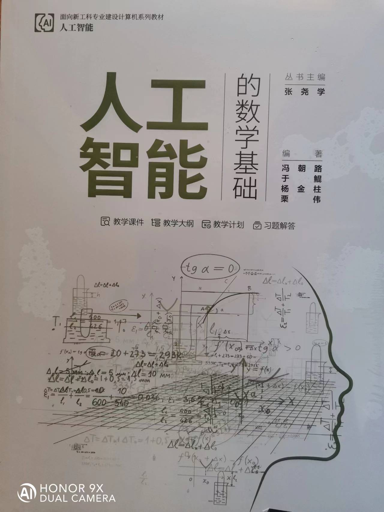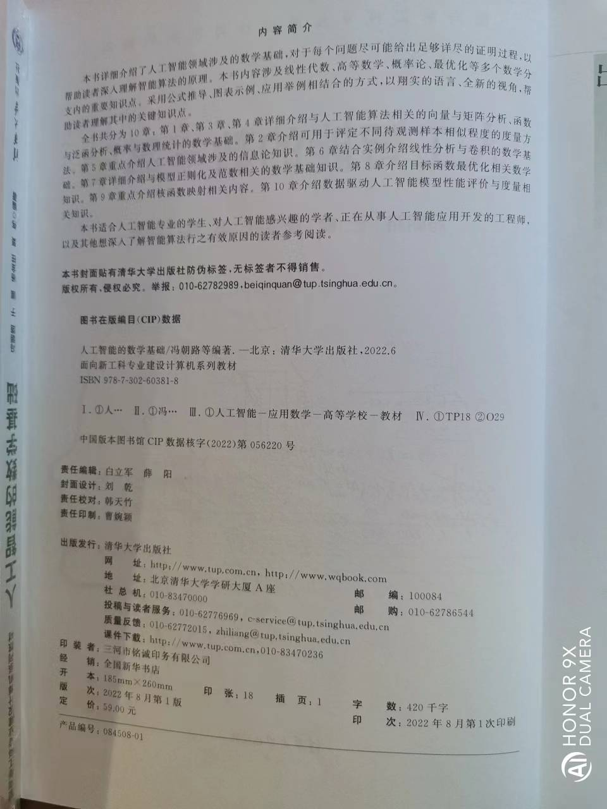
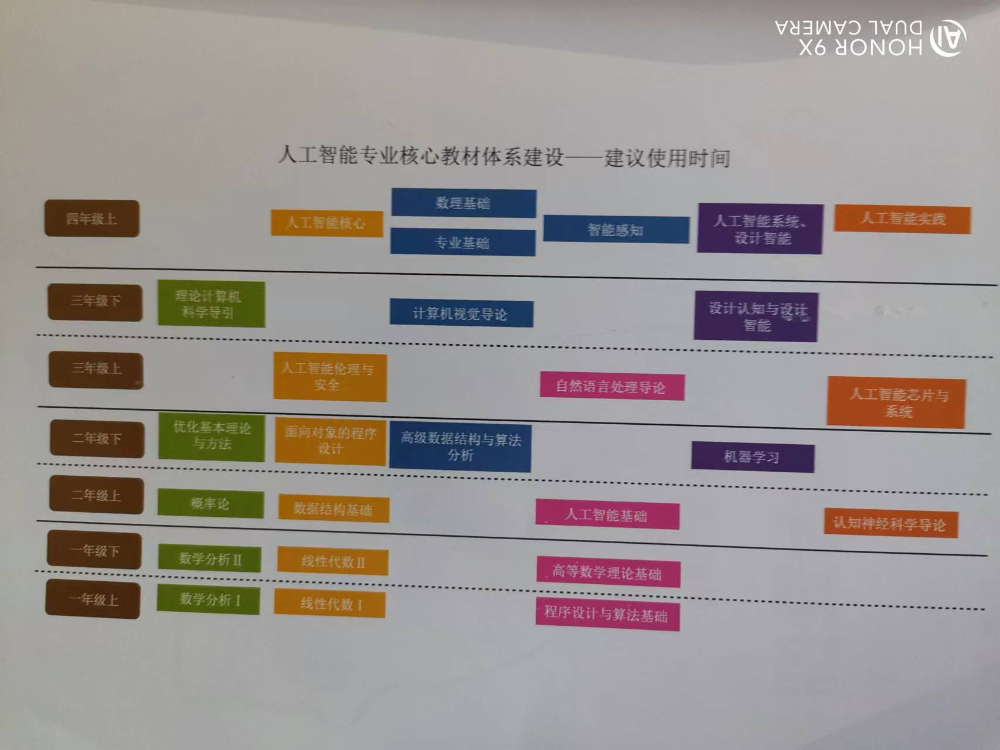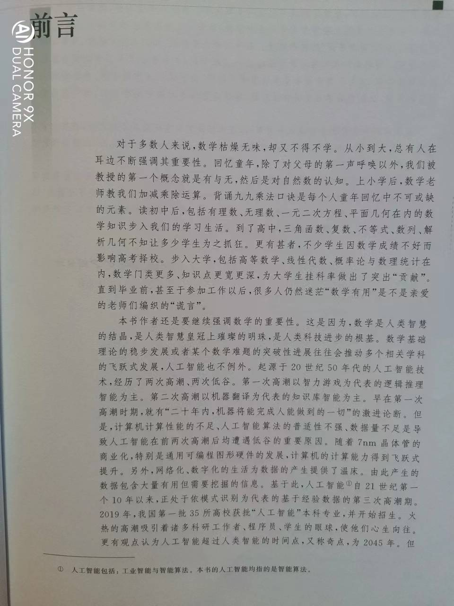
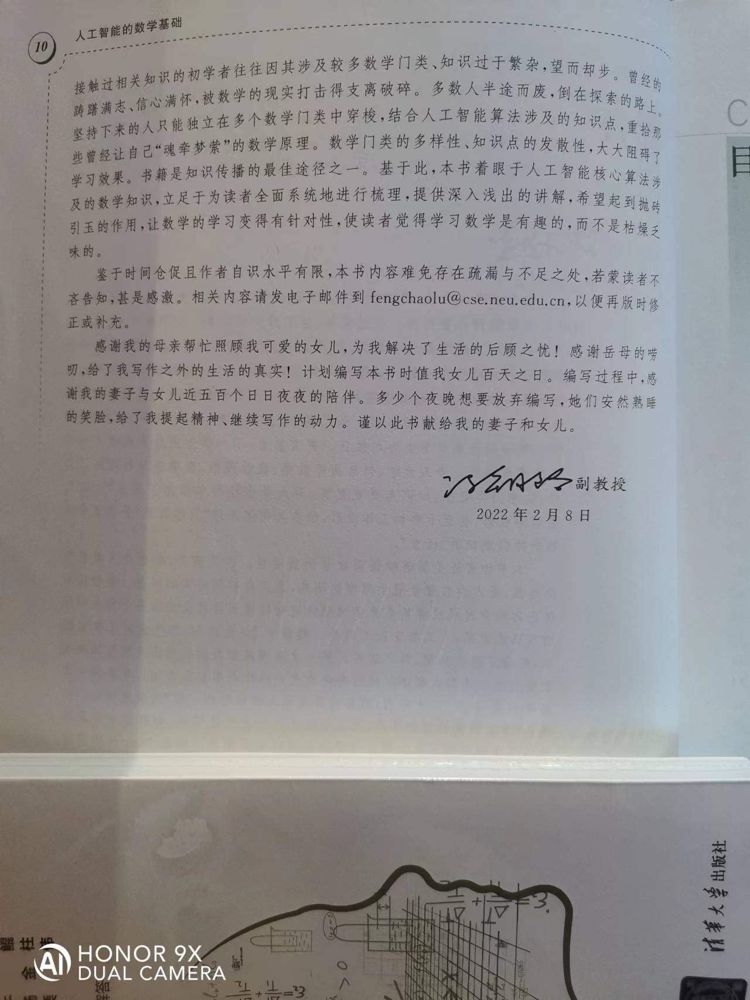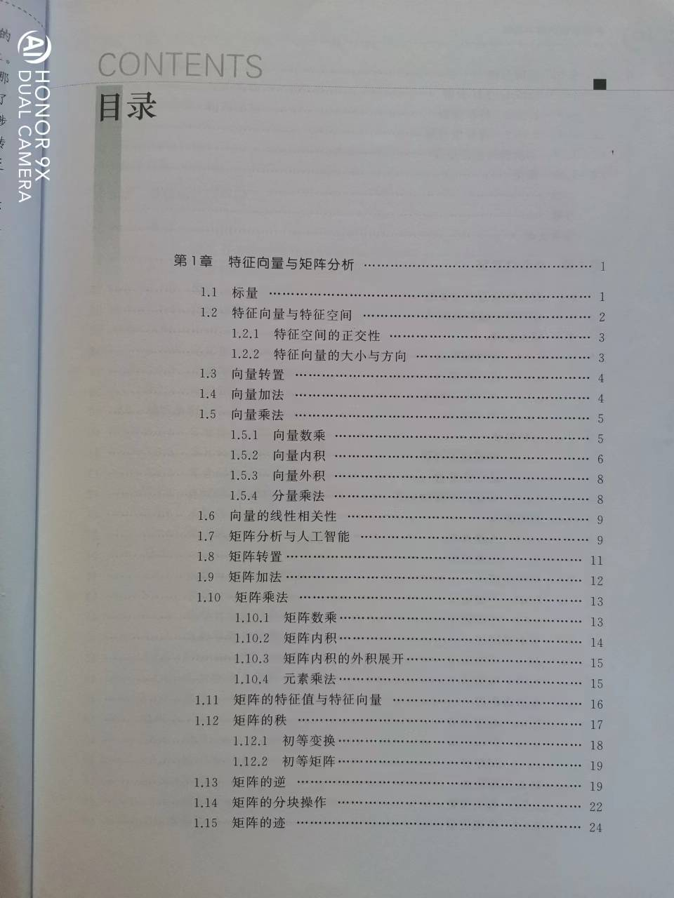
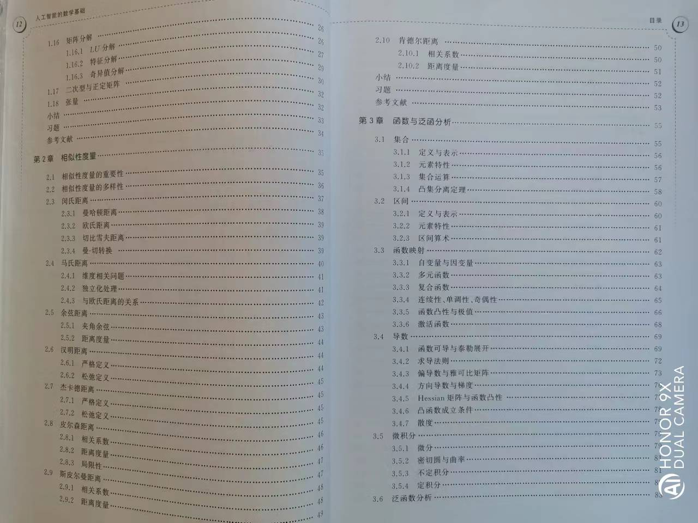
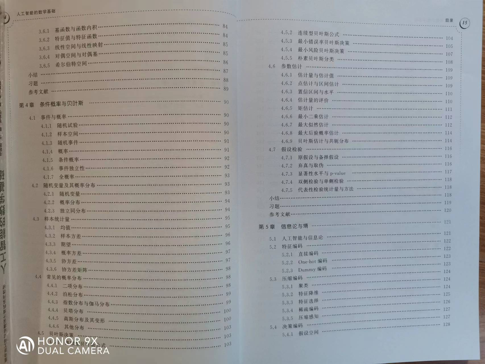
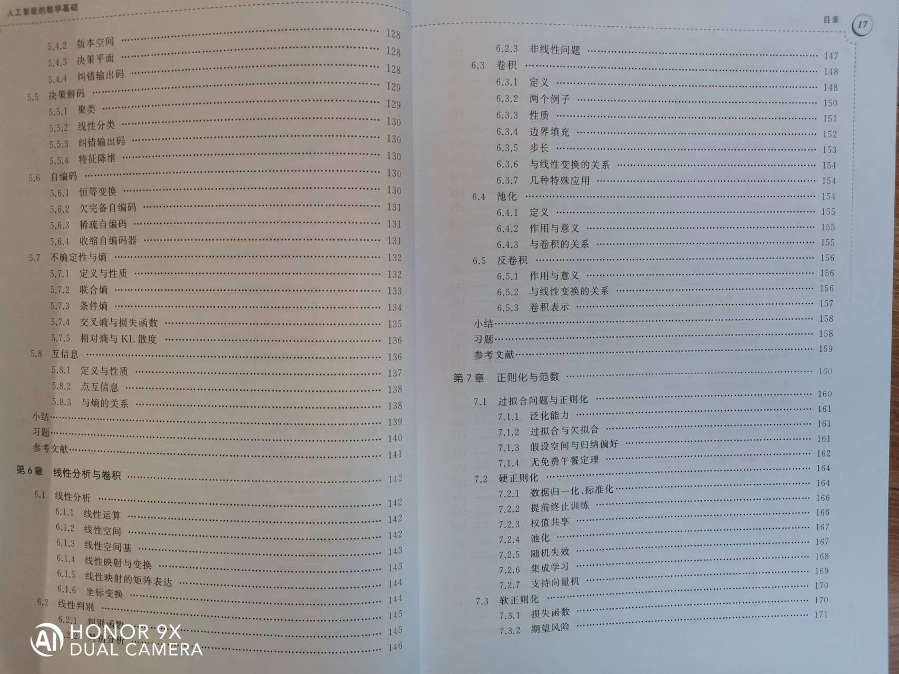
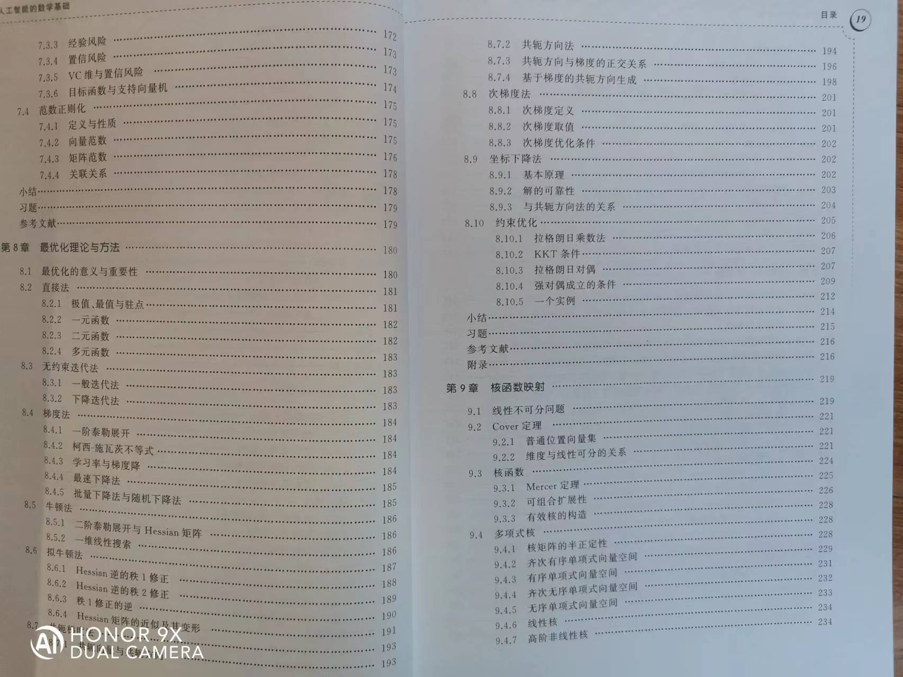
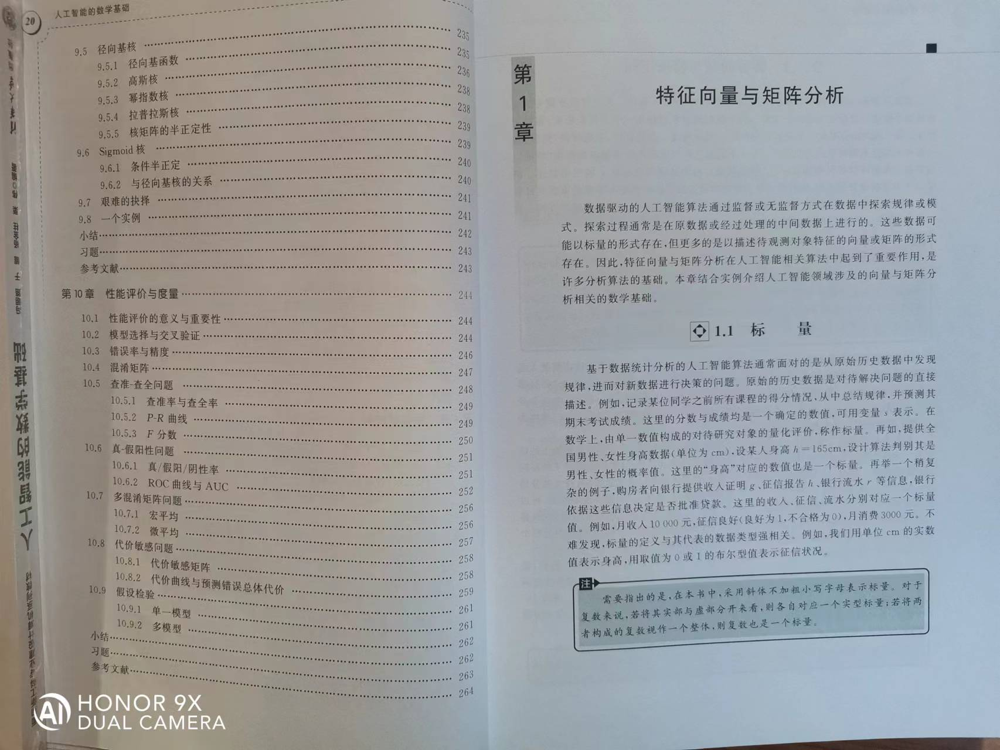